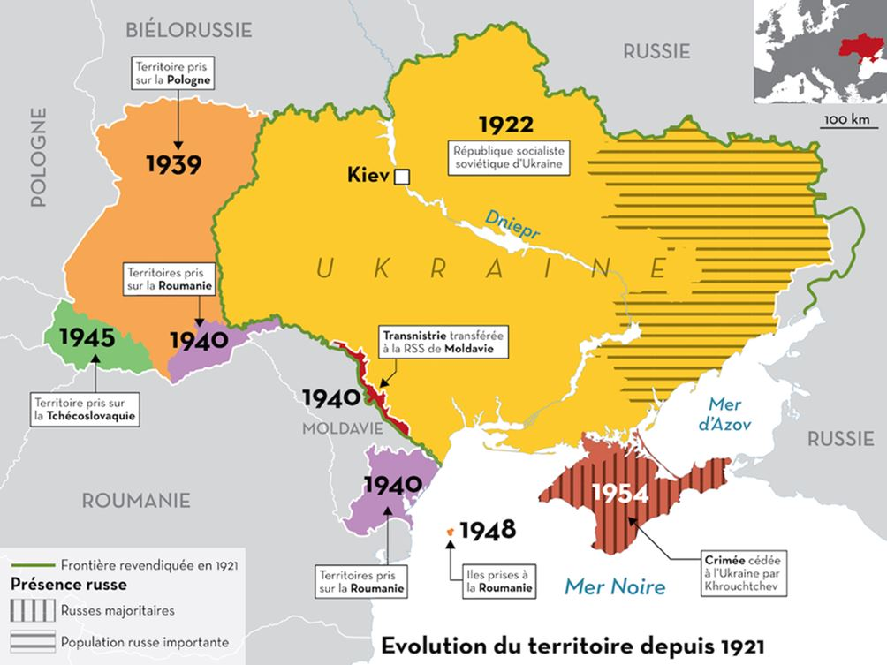
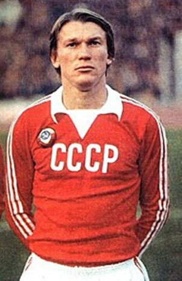
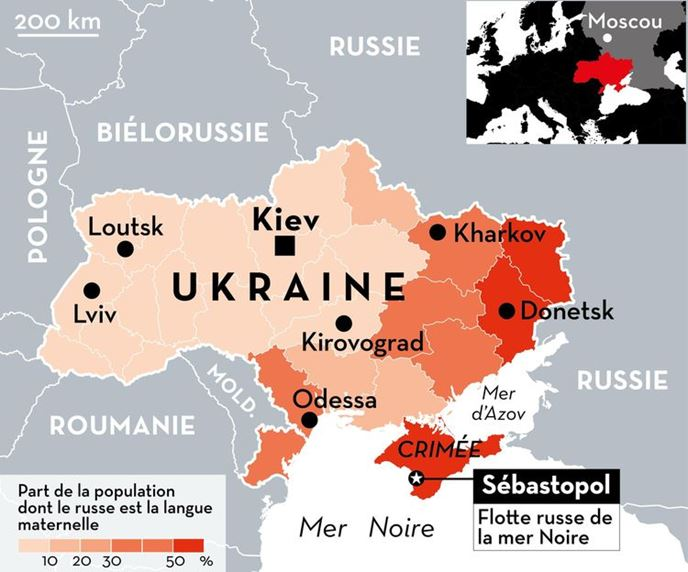

Aussi loin que je me suis intéressé à l'histoire de l'Europe de l'Est, jamais je n'ai réussi à donner une définition suffisamment juste et simple de l'Ukraine et des Ukrainiens. Je le dis avec d'autant plus de force que c'est un problème qui me touche à cœur depuis les tristes évènements de la guerre civile. Mais, plus je réfléchis et plus je m’interroge sur une éventuelle définition.
D'accord, l'Ukraine, en tant que «nation» est née en 1991 de la désagrégation de l'URSS. Mais, ce n'est pas si simple en fait. L'URSS était composée de républiques soviétiques qui, pour beaucoup d'entre elles, reposaient sur une base étatique ancestrale, avec frontières, capitale, peuple, langue, etc...Mais, cette histoire datant du début des années mille neuf cent vingt, il faut aussi avoir à l'esprit, qu'à l'époque, il y avait encore des zones peu définies sur la carte du monde. Des zones dont les peuples, les langues, les frontières formaient un ensemble hasardeux, mouvant...
Le Caucase et l'Ukraine faisaient partie de cela. A la chute de l'URSS, nous avons redécouvert subitement un monde en noir et blanc du début du siècle passé, notamment pour l'Ukraine. Tout le temps que c'était l'URSS, les frontières n'en n'étaient pas vraiment et chacun était soviétique, peu importe qu'il fût russe, biélorusse ou ukrainien. Quand le président français, François Hollande, déclara à propos de l'Ukraine, et, plus particulièrement du vote d'indépendance de la Crimée et de son rattachement à la Fédération de Russie, que « les frontières sont immuables », de quelles frontières parlait-il? Car, moi-même, je serais bien incapable de les définir!
La vérité, c'est que ce sont souvent les mêmes personnes qui, en Occident, dématérialisent les frontières européennes qui sont, pour l'Ukraine, les fervents partisans d'un nationalisme exacerbé. Contradictoire? Hum! Il faut chercher plus profondément les racines de cette contradiction. La triste réalité, c'est que l'Occident s'est réjoui de la chute du Bloc de l'Est et, plutôt que de créer à l'époque, des liens fraternels de redressements économiques mutuels, les industriels ont considéré la nouvelle Russie indépendante comme un pays à piller. Piller les ressources minières, énergétiques, s'emparer des complexes industriels, réduire la population au chômage... Le réveil fut brutal pour cette population qui rêvait de démocratie et qui s'est réveillée obligée de vendre ses vêtements au marché noir pour payer les retraites! Pour l'Occident, la Russie amie, c'était celle que l'on pouvait piller! Oui mais voilà, le redressement est survenu sous l'impulsion du duo Medvedev / Poutine. Enfin, de la «dictature» russe selon les médias occidentaux car, dès que l'on ne peut plus piller la Russie, elle devient automatiquement une dictature... Remarquez, pour les Occidentaux, il y a beaucoup de « dictatures », Irak, Libye, Syrie... alors, pourquoi pas la Russie le temps qu'on y est! A défaut de la piller, à défaut de pouvoir lui faire la guerre directement, alors, le mieux est de l'isoler. Diabolisation outrancière, rétorsions économiques, déploiements de forces militaires navales en Mer de Chine, Mer noire et Baltique et de forces terrestres au plus près des frontières russes occidentales. Les Etats-Unis et l'OTAN à la manœuvre avec les bons « toutous » européens!
Dans ce contexte, il ne restait plus qu'à faire sauter cette pièce de puzzle qu'est l'Ukraine. Pièce de puzzle entre Est et Ouest. Ce fameux « euromaïdan » qui, en tous points, ressemble plus à un putsch qu'autre chose! Et si cela entraîna le triste conflit que l'on suit jours après jours au Donbass ainsi que la partition de la Crimée, c'est dû en grande partie à la nature même de l'Ukraine, tellement complexe que l'on a du mal à la définir.
A bien y réfléchir, je dirais que l'Ukraine indépendante, en tant que nation, c'est un régionalisme auquel on a offert une nature nationale. Quand je dis «on», personne en fait. Les évènements historiques ont suffi à eux seuls. Nous sommes passés d'Oleg Blokhine, attaquant vedette du Dinamo de Kiev de l'époque soviétique à Oleg Blokhine, entraîneur de l'équipe nationale ukrainienne de football. C'est ainsi et il y a certaines choses que l'on ne peut pas non plus remettre en cause, sinon, on n'avance plus non plus! L'Ukraine et un pays indépendant, c'est une réalité. Après, ça ne répond pas pour autant à ce qu'est l'Ukraine intrinsèquement….
Tentons une analogie en prenant la Normandie comme exemple. N'est pas le même Normand, celui qui habite dans le Pays de Caux, le pays alençonnais, la plaine de Caen, le sud-Manche ou le Nord-Cotentin. Chacun aura une histoire différente, un patois (dialecte) différent, des coutumes différentes. Pourtant, tous seront normands et, même, fiers de l'être! Pour la plupart aussi, ils auront un point commun, parler le même français et ne pas forcément savoir « patoiser »!
Imaginons maintenant que la Normandie devienne indépendante et que, plus que tout, elle impose en langue nationale un seul et unique patois. Les autres contrées normandes risquent fort d'être jalouses mais, le problème général, c'est que ça ne changera rien au fait que quasiment tout le monde ne parle que français! Et les villes de Caen, Rouen et le Havre? Elles ne seraient plus françaises mais normandes? Le problème qu'elles l'ont toujours été normandes, mais de régionalisme, pas de nationalité. Pour ce dernier point, elles étaient françaises! Tout cela risque de créer des problèmes sociétaux, culturels... et même de déboucher sur de vives tensions internes pouvant dégénérer en guerre civile. Maintenant, replacez ce tableau fictif en Ukraine et, au lieu des villes précitées, prenez Odessa, Sébastopol ou encore Donetsk, et là, le tableau n'est plus fictif, il est réel, avec la guerre civile par-dessus le marché !
Tentons une autre expérience. Descendez dans la rue, en France, et demandez aux gens ce qu'ils pensent être de la nationalité des villes d'Odessa et de Sébastopol. On ne leur demandera pas une réponse exacte, de toute façon, la question est beaucoup plus difficile qu'on ne le croit, mais juste ce qu'ils pensent. Je suis persuadé qu'un grand nombre diront que ce sont peut-être des villes russes car « on les imagine russes » de par leur histoire et leur situation géographique. Ce n'est qu'une imagination de toute façon car la plupart des gens interrogés ne pourraient sans doute même pas situer la Mer noire... Disons que près de la moitié répondra de cette façon. De la moitié restante, une partie dira évidemment qu'elle s'en fiche royalement. Intéressons-nous alors aux derniers, soit, les 2/3 des 50 % restants. 1/3 affirmera que ce sont des villes ukrainiennes, qu'elles ont toujours été ukrainiennes car bâties sur le sol ukrainien et que Vladimir Poutine a annexé la Crimée qui était aussi ukrainienne. Bien... Le dernier 1/3 de ces 50 %, lui, sera plus évasif... « Alors... ce sont des villes russes, enfin, non... ukrainiennes...Disons, russes puis ukrainiennes... ou bien russo-ukrainiennes ou ukraino-russes... enfin, heu... c'est un peu compliqué quand même cette question ! ». Et bien, pour ma part, je crois que ce sont ces derniers qui ont raison, oui, c'est compliqué comme question !
C'est compliqué car l'Ukraine est une région avant d'être un pays. L'Ukraine est une région où l'expression régionale est plurielle. Et l'histoire s'enchevêtrant entre russes, tatars, polonais lituaniens, hongrois, roumains... C'est tout cela « être ukrainien ». Par conséquent, vivre intrinsèquement l'Ukraine c'est vivre un gigantisme géographique et des remaniements historiques d'une extrême complexité ! Nous en arrivons alors à la notion de fédéralisme et cette notion n'est pas péjorative, bien au contraire! Toutes les grandes nations sont peu ou prou des formes de fédérations. Les Etats-Unis d'Amérique, le Canada, la Chine, l'Inde, la Fédération de Russie. C'était même là, une des bases des accords de Minsk II début 2015. Accords semble-t-il totalement oubliés par le temps qui passe et les obus de l'artillerie ukrainienne qui massacre son propre peuple au Donbass... Pourtant, il ne peut y avoir d'unicité ethnico-culturelle que dans des micros-états, or, l'Ukraine ce n'est ni le Liechtenstein ni Monaco !
La Crimée était russe depuis au moins Catherine II. On l'a dit et répété, le fait que Khrouchtchev l'ait mise sous administration ukrainienne en 1954 ne changeait rien car c'était sous l'URSS à une époque ou nul ne pensait à sa future désagrégation. Même l'Ukraine n'était pas un pays mais une république socialiste soviétique. Les habitants du Donbass eux-mêmes, encore aujourd'hui, se disent ukrainiens. Seulement, avec près de 10.000 morts et des habitations en ruines, pendant combien de temps se diront-ils ukrainiens ? Il n'est pas difficile de comprendre que jour après jour, à force de viols, de pillages, de massacres, ont les pousse directement dans les bras de la Russie et le pire c'est qu'on accuse Moscou qui n'y est évidemment pour rien depuis le début ! L'histoire jugera, l'histoire jugera...
Ceux qui soutiennent le plus ardemment monsieur Porochenko et le nationalisme ukrainien sont souvent ceux qui en connaissent le moins en matière culturelle, sociétale et historique de l'Ukraine elle-même et de l'Europe de l'Est en général. Le plus souvent, ils ne sont guidés que par leur poutinophobie primaire. Aujourd'hui, l'Ukraine est un pays indépendant autant qu'il est une nation chimérique. C'est-à-dire que nous devons accepter l'indépendance de l'Ukraine qui a fait suite au démembrement de l'Union soviétique mais, dans le même temps, nous devons accompagner pacifiquement les Ukrainiens à définir leur espace de vie forcément complexe et diversifié. Cela, nous ne le faisons pas ou alors, nous le faisons mal ! Dans ce contexte, on doit comprendre le «pourquoi» de la guerre au Donbass et l'impulsion de la Crimée de se rapprocher de la Russie pour éviter, justement, que ça ne lui arrive aussi à elle !
Question: doit-il y avoir une langue écrite officielle en Ukraine ? Je m'interdis de répondre directement car c'est aux Ukrainiens de décider pour eux-mêmes. Par contre, il peut y avoir plusieurs langues orales. Prenons la Moldavie. La langue écrite officielle est le roumain (que chacun appelle le moldave par nationalisme exacerbé alors que c'est du copié / collé roumain !), mais au niveau oral, tout le monde parle russe, ou un mélange de russe et de roumain, ou bien les deux selon l'interlocuteur. Il y a aussi le groupe ethnique des Gagaouzes qui ont leur propre dialecte (bien qu'ils soient aussi de parfaits russophones).
Arrivez en Moldavie et vous commencerez à parler russe à la douane malgré des papiers en roumain. En 2015 j'y ai assisté à un mariage. La cérémonie était en russe mais les documents des jeunes mariés en roumain. Si la famille avait été roumanophone, la cérémonie aurait été en roumain. On ne va quand même pas s'étriper pour ce qui, au fond, est plus une richesse culturelle qu'autre chose! Après, je conçois qu'il y ait des règles communes d'établies mais avec le respect de cette pluralité qui a toujours existé. Car le principe de la Moldavie comme de l'Ukraine c'est justement une diversité déjà très ancienne.
On peut définir assez facilement le cheminement de la Roumanie, depuis l'union de ses provinces primitives vers 1859 à la « grande Roumanie » de 1919. On peut encore définir le cheminement plus complexe de la République de Moldavie, historiquement roumaine mais qui préféra son indépendance en 1991 plutôt que l'unionisme avec la Roumanie (là-encore, l'histoire future peut réserver des surprises...). On peut aussi définir la province auto-proclamée de Transnistrie. En fait, malgré toute la sympathie que j'ai pour la Moldavie, je dis gentiment « oubliez-là », c'est une province ukrainienne à la base et rattachée par Staline à la République soviétique de Moldavie en 1945 de manière totalement arbitraire juste pour servir de glacis protecteur et de plate-forme de soviétisation de la Moldavie. Vous l'avez sans doute remarqué, chemin faisant nous entrons en Ukraine... et là, la définir facilement est beaucoup plus complexe. Encore une fois, vivre l' « ukrainité », l'« ukrainisme », ce n'est pas vivre un nationalisme qui n'a pas lieu d'être en ce pays. C'est d'abord vivre un régionalisme mais, qui peut prendre une forme nationale. Pour cela, il faudrait en premier lieu, que les puissances occidentales, notamment la France, reviennent aux fondamentaux de Minsk II. Nous verrons ce qu'en dira le ou la prochain(e) président(e) à l'Elysée...
Depuis 1991, j'ai toujours affirmé mon souhait d'un immense pont de paix et de fraternité « Paris / Berlin / Moscou ». Il est évident que Kiev doit aussi être un pilier de ce pont. Un pilier de ce pont de par son régionalisme, de par son « ukrainisme ». Une passerelle eurasiatique et non un rempart nationaliste anti-russe qui ne sert que les intérêts d'une guerre économique occidentale.
Partager cette page